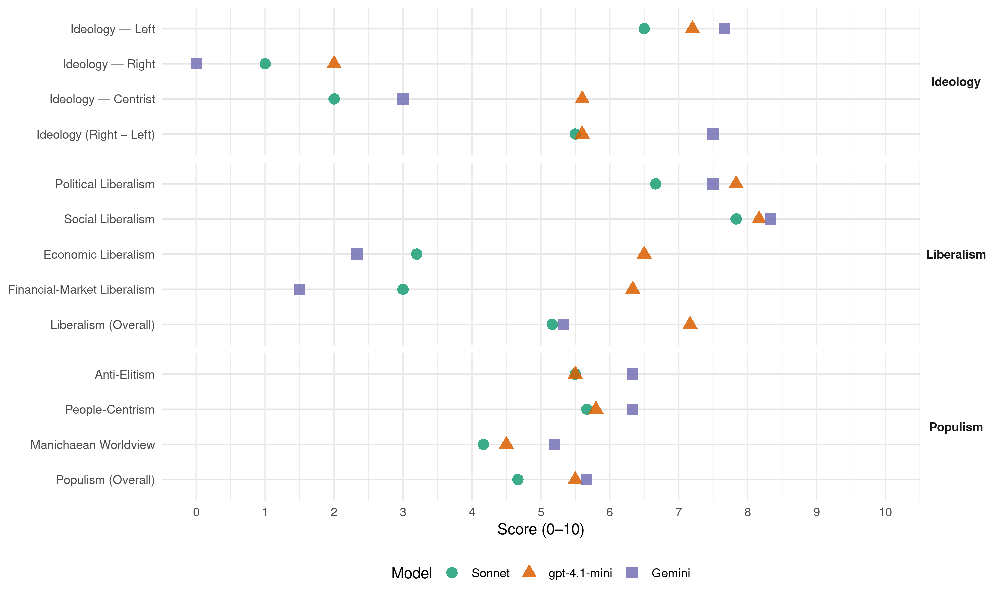

(Spain, 2015)
manifesto_id 33096_201512
Get full text: This site shows derived annotations and short verbatim quotes only. The full manifesto text is © Manifesto Project / WZB — obtain it via manifesto-project.wzb.eu using the manifesto_id above.
Headline scores
| Dimension | Sonnet | gpt-4.1-mini | Gemini |
|---|---|---|---|
| Populism (Overall) | 4.7 | 5.5 | 5.7 |
| Anti-Elitism | 5.5 | 5.5 | 6.3 |
| People-Centrism | 5.7 | 5.8 | 6.3 |
| Manichaean Worldview | 4.2 | 4.5 | 5.2 |
| Ideology (Right − Left) | 5.5 | 5.6 | 7.5 |
| Liberalism (Overall) | 5.2 | 7.2 | 5.3 |
| Political Liberalism | 6.7 | 7.8 | 7.5 |
| Social Liberalism | 7.8 | 8.2 | 8.3 |
| Economic Liberalism | 3.2 | 6.5 | 2.3 |
| Financial-Market Liberalism | 3.0 | 6.3 | 1.5 |
Evidence per dimension
Economic Liberalism
Gemini · score 2.0 · verified · chunk 1
“Reapropiació pública de sectors estratègics com l’aigua”
Cal que la ciutadania torni a poder actuar sobre aquests sectors clau per posar-los al servei de la gent, en un doble sentit: Reapropiació pública de sectors estratègics com l’aigua, el gas o l’electricitat.
Gemini · score 2.0 · verified · chunk 2
“derogació del contracte de suport als emprenedors”
fent del contracte indefinit el contracte de referència i derogant qualsevol modalitat que pugui implicar la desaparició de la causa al contracte, en aquest sentit, derogació del contracte de suport als emprenedors.
Gemini · score 2.0 · verified · chunk 3
“regular i limitar els preus de l’habitatge”
Cal regular i limitar els preus de l’habitatge i del sòl tant de propietat com de lloguer
Gemini · score 3.0 · verified · chunk 4
“cooperatives de l’economia social i solidària”
perquè es desenvolupi la inversió realitzada en cooperatives de l’economia social i solidària
Gemini · score 3.0 · verified · chunk 5
“revertir processos de privatització”
— Revertir processos de privatització. Realitzar els canvis legals necessaris per tal de finalitzar els contractes
Gemini · score 2.0 · verified · chunk 6
“circulació del capital i les mercaderies”
que estableixi la defensa de la circulació del capital i les mercaderies per sobre dels drets de la ciutadania
gpt-4.1-mini · score 7.0 · verified · chunk 1
“Promoure la creació de cooperatives i d’empreses d’economia social i solidària”
Impulsar la creació de cooperatives i d’empreses d’economia social i solidària com a eina per als processos de reconversió empresarial, vetllant per la participació de les persones treballadores en els processos, i de reindustrialització.
gpt-4.1-mini · score 6.0 · verified · chunk 2
“Incrementar la pensió mínima contributiva fins a l’SMI”
Increment de la pensió mínima contributiva fins a l’SMI. Finançament mitjançant la recuperació dels tipus patronals de cotització per desocupació, l’actualització de la base mínima de cotització al nou SMI i l’eliminació del sostre màxim de cotització, sense modificar l’import de la pensió màxima.
gpt-4.1-mini · score 7.0 · verified · chunk 3
“Incrementar progressivament el percentatge del PIB dedicat a l’educació”
Incrementar progressivament el percentatge del PIB dedicat a l’educació, per poder assolir, en finalitzar la legislatura, almenys la mitjana de la Unió Europea, situada en el 5,6%.
gpt-4.1-mini · score 7.0 · verified · chunk 4
“volem un nou model econòmic, social i ecològic”
És evident que el règim del 78 no ens permet assolir aquests objectius i és precisament per això que volem canviar-ho tot. Volem un nou model econòmic, social i ecològic; volem blindar els nostres drets socials i les nostres llibertats; volem garantir, millorar i ampliar els serveis públics i volem fer front a l’actual emergència social des de la plena sobirania.
gpt-4.1-mini · score 7.0 · verified · chunk 5
“Impulsar una nova llei de finances locals que doti de estabilitat, rigor i recursos”
Impulsar una nova llei de finances locals que doti de estabilitat, rigor i recursos les competències assumides pels ajuntaments, de forma coordinada amb la del finançament autonòmic, definint amb claredat la participació de les hisendes locals en els tributs de l’Estat (PIE) i en els de les Comunitats Autònomes.
gpt-4.1-mini · score 5.0 · verified · chunk 6
“revertir completament les polítiques dutes a terme per l’actual govern”
Entenem que les polítiques de cooperació al desenvolupament, drets humans i pau han de constituir els vectors principals de la política d’acció exterior i, per tant, revertir completament les polítiques dutes a terme per l’actual govern.
Sonnet · score 3.0 · verified · chunk 1
“onada privatitzadora i desreguladora que ha deixat qüestions clau”
Això és producte de l’onada privatitzadora i desreguladora que ha deixat qüestions clau com l’electricitat, el gas o l’aigua en mans de grans empreses privades que només busquen obtenir el màxim benefici.
Sonnet · score 3.0 · verified · chunk 2
“Reapropiar-se des de l’àmbit públic de la xarxa”
Reapropiar-se des de l’àmbit públic de la xarxa de distribució i transport. Revisar les tarifes de la part regulada per incentivar l’estalvi.
Sonnet · score 3.0 · verified · chunk 3
“tercer sector no pot respondre a les lògiques de mercat”
Auditar les empreses del tercer sector per poder promoure i enfortir aquelles que siguin de proximitat. El tercer sector no pot respondre a les lògiques de mercat
Sonnet · score 5.0 · mixed · chunk 4
“inversió privada no té capacitat per a grans investigacions”
La inversió privada no té capacitat per a grans investigacions que no donen un rendiment immediat. Després de 5 anys de retallades hem retrocedit al nivell d’inversió pública en R+D+i del 2007
Sonnet · score 4.0 · verified · chunk 5
“Rebutjar qualsevol altre tractat internacional que vagi en detriment dels drets”
Rebutjar qualsevol altre tractat internacional que vagi en detriment dels drets i les llibertats fonamentals, que estableixi la defensa de la circulació del capital i les mercaderies per sobre dels drets de la ciutadania
Sonnet · score 3.0 · verified · chunk 6
“la circulació del capital i les mercaderies per sobre dels drets”
Rebutjar qualsevol altre tractat internacional que… estableixi la defensa de la circulació del capital i les mercaderies per sobre dels drets de la ciutadania
Financial-Market Liberalism
Gemini · score 1.0 · verified · chunk 1
“Constituir una banca pública per donar una orientació”
Enfront d’aquesta situació cal impulsar un nou model financer que tingui com a prioritat l’interès social enfront dels beneficis privats dels accionistes. Això passa per: Constituir una banca pública per donar una orientació del crèdit d’acord amb les necessitats socials
Gemini · score 1.0 · verified · chunk 2
“suprimint els incentius fiscals als plans de pensions privats”
Gestionar plans de pensions públics per part de la tresoreria de la SS, via cotitzacions complementàries, tot suprimint els incentius fiscals als plans de pensions privats.
Gemini · score 1.0 · verified · chunk 3
“cedir els préstecs hipotecaris als titulars”
S’obligarà a les entitats financeres a cedir els préstecs hipotecaris als titulars dels habitatges amb les mateixes rebaixes
Gemini · score 2.0 · verified · chunk 4
“imposicions dels poders financers”
No és possible una sobirania real amb submissió a les imposicions dels poders financers, de la Troika
Gemini · score 2.0 · verified · chunk 5
“implementació efectiva de l’Impost de Transaccions Financeres”
9.9 Implementació efectiva de l’Impost de Transaccions Financeres Entre els països de la Unió Europea
Gemini · score 2.0 · verified · chunk 6
“defensa de la circulació del capital”
fonamentals, que estableixi la defensa de la circulació del capital i les mercaderies per sobre dels drets
gpt-4.1-mini · score 6.0 · verified · chunk 1
“Sotmetre els bancs privats a una estricta regulació per evitar que excedeixin un cert volum”
Sotmetre els bancs privats a una estricta regulació per evitar que excedeixin un cert volum, limitant-ne les activitats especulatives i separant la banca comercial de la banca d’inversió.
gpt-4.1-mini · score 7.0 · verified · chunk 3
“Crear un fons d’habitatge social gestionat per les comunitats autònomes”
Aquest Fons d’Habitatge Social (FHS), al qual quedaran adscrits tots els habitatges que actualment gestiona la Sareb, així com tots els habitatges de titularitat pública i els que s’adquireixin amb aquestes finalitats, serà gestionat per les comunitats autònomes i els ajuntaments, amb la participació d’entitats socials i representats de les persones afectades i usuàries.
gpt-4.1-mini · score 6.0 · verified · chunk 5
“Lluitar contra els paradisos fiscals i els tax rulings”
Espanya ha de proposar també que la UE abordi dos problemes fonamentals per a la sostenibilitat de les finances públiques. En primer lloc, cal endurir l’actitud respecte dels paradisos fiscals i els tax rulings, sigui quin sigui el seu estatus en relació a la UE.
Sonnet · score 2.0 · verified · chunk 1
“Prohibir a la borsa les pràctiques que de sempre se sap que són nocives”
Prohibir a la borsa les pràctiques que de sempre se sap que són nocives (venda a crèdit, compra a crèdit, etc.) i de les inventades recentment, com els productes derivats i els sintètics.
Sonnet · score 3.0 · verified · chunk 2
“ajuts als bancs i caixes”
I això després d’aportar 90.000 milions d’euros -l’equivalent a un any de pensions- per a ajuts als bancs i caixes. I per això impulsarem: Derogar les reformes de pensions del PP i el PSOE.
Sonnet · score 3.0 · verified · chunk 3
“entitats financeres a cedir els préstecs hipotecaris”
S’obligarà a les entitats financeres a cedir els préstecs hipotecaris als titulars dels habitatges amb les mateixes rebaixes i condicions que els que ofereixen a aquests fons d’inversió
Sonnet · score 4.0 · verified · chunk 4
“imposicions dels poders financers, de la Troika”
No és possible una sobirania real amb submissió a les imposicions dels poders financers, de la Troika, o amb tractats internacionals com el TTIP.
Sonnet · score 3.0 · verified · chunk 5
“Implementació efectiva de l’Impost de Transaccions Financeres”
9.9 Implementació efectiva de l’Impost de Transaccions Financeres Entre els països de la Unió Europea que s’hi ha compromès entre el 2016 i el 2017.
Sonnet · score 3.0 · verified · chunk 6
“Liderar les polítiques de condonació del deute extern”
Fixar l’horitzó del 2019 per arribar al 0’7% del PIB. Liderar les polítiques de condonació del deute extern.
Political Liberalism
Gemini · score 7.0 · verified · chunk 1
“assegurant-ne una gestió democràtica i ciutadana”
Recuperar el paper de les caixes d’estalvi limitant-ne l‘activitat a un àmbit de proximitat i assegurant-ne una gestió democràtica i ciutadana i controls
Gemini · score 7.0 · verified · chunk 2
“regulada a la Constitució”
La llibertat sindical, com a dret fonamental regulat a la Constitució, ha de constituir garantia de la llibertat per establir
Gemini · score 7.0 · verified · chunk 3
“sotmès al control democràtic i la participació social”
finançat amb impostos i sense prepagaments ni repagaments, universal i equitatiu i que, a més, estigui sotmès al control democràtic i la participació social.
Gemini · score 8.0 · verified · chunk 4
“aprofundiment democràtic”
que persegueixin la transformació social de la ciutadania, la participació ciutadana i l’aprofundiment democràtic.
Gemini · score 8.0 · verified · chunk 5
“garantir el control democràtic i judicial”
Al mateix temps, cal garantir el control democràtic i judicial de l’actuació dels cossos de seguretat
Gemini · score 8.0 · verified · chunk 6
“Estat de dret, els drets humans”
integració a la Mediterrània basat en l’Estat de dret, els drets humans, la justícia i el desenvolupament
gpt-4.1-mini · score 8.0 · verified · chunk 1
“Garantir el dret a la intimitat i el dret a saber qui té les nostres dades personals”
Garantir que en l’ús de les TIC es protegeixi el dret a la intimitat i el dret a saber qui té les nostres dades personals, com s’hi ha accedit, per a què s’utilitzen i possibilitar-ne el seu control i cancel·lació.
gpt-4.1-mini · score 7.0 · verified · chunk 2
“Garantirem, mitjançant llei estatal, que tots els ciutadans i ciutadanes tinguin accés a un catàleg de serveis socials mínim i comú”
Des d’EN COMÚ PODEM continuarem lluitant, al costat dels moviments socials, per millorar els nostres drets socials, que són la font principal de seguretat i benestar material, incorporant noves demandes socials i defensant el nostre estat del benestar. — Garantirem, mitjançant llei estatal, que tots els ciutadans i ciutadanes tinguin accés a un catàleg de serveis socials mínim i comú, amb independència de la comunitat autònoma on resideixin.
gpt-4.1-mini · score 8.0 · verified · chunk 3
“Inclourem la salut com a dret fonamental a la Constitució”
Cal recuperar l’autèntic SNS. Inclourem la salut com a dret fonamental a la Constitució i garantirem un SNS públic, universal, gratuït i sostenible.
gpt-4.1-mini · score 8.0 · verified · chunk 4
“volem blindar els nostres drets socials i les nostres llibertats”
Volem un nou model econòmic, social i ecològic; volem blindar els nostres drets socials i les nostres llibertats; volem garantir, millorar i ampliar els serveis públics i volem fer front a l’actual emergència social des de la plena sobirania.
gpt-4.1-mini · score 8.0 · verified · chunk 5
“Garantir la independència dels mitjans respecte als poders polítics i econòmics”
Perquè el dret a la informació esdevingui un dret ciutadà i per tant que totes les persones tinguin el dret a accedir a una informació plural i de qualitat, s’ha d’assegurar la independència dels mitjans respecte als poders polítics i econòmics. Cal facilitar l’accés de totes les persones a una informació plural i veraç.
gpt-4.1-mini · score 8.0 · verified · chunk 6
“la defensa dels drets humans”
EN COMÚ PODEM és una candidatura pacifista que aposta per la cultura de la pau i la defensa dels drets humans. Entenem que les polítiques de cooperació al desenvolupament, drets humans i pau han de constituir els vectors principals de la política d’acció exterior i, per tant, revertir completament les polítiques dutes a terme per l’actual govern.
Sonnet · score 5.0 · verified · chunk 1
“Supressió de l’article 135 de la Constitució Espanyola”
Supressió de l’article 135 de la Constitució Espanyola, reformat per PP i PSOE, que estableix com a prioritat màxima reduir el dèficit i no reduir l’atur o garantir els drets bàsics.
Sonnet · score 5.0 · verified · chunk 2
“avançar com a societat cohesionada i democràtica”
Estudiar i entendre la rellevància d’aquest patrimoni cultural contribueix a comprendre’ns a nosaltres mateixos avui i avançar com a societat cohesionada i democràtica.
Sonnet · score 7.0 · verified · chunk 3
“control democràtic i la participació social”
EN COMÚ PODEM hem desenvolupat un programa de Salut orientat a recuperar el model sanitari públic…que, a més, estigui sotmès al control democràtic i la participació social
Sonnet · score 8.0 · verified · chunk 4
“dret a decidir lliurement el seu futur polític”
vol exercir el dret a decidir lliurement el seu futur polític, en tots els sentits, com a expressió de la sobirania popular.
Sonnet · score 8.0 · verified · chunk 5
“democratitzar i incidir en tots els àmbits on es prenen decisions”
globals per tal de democratitzar i incidir en tots els àmbits on es prenen decisions que afecten les nostres vides.
Sonnet · score 7.0 · verified · chunk 6
“Donar suport a la societat civil que lluita a favor de la democràcia”
Acompanyar el procés de pau i reconciliació que la Diplomàcia internacional està duent a terme a Líbia… Donar suport a la societat civil que lluita a favor de la democràcia.
Liberalism (Overall)
Gemini · score 5.0 · verified · chunk 1
“Reapropiació pública de sectors estratègics com l’aigua”
Cal que la ciutadania torni a poder actuar sobre aquests sectors clau per posar-los al servei de la gent, en un doble sentit: Reapropiació pública de sectors estratègics com l’aigua, el gas o l’electricitat.
Gemini · score 5.0 · verified · chunk 2
“regulada a la Constitució”
La llibertat sindical, com a dret fonamental regulat a la Constitució, ha de constituir garantia de la llibertat per establir
Gemini · score 5.0 · verified · chunk 3
“sotmès al control democràtic i la participació social”
finançat amb impostos i sense prepagaments ni repagaments, universal i equitatiu i que, a més, estigui sotmès al control democràtic i la participació social.
Gemini · score 6.0 · verified · chunk 4
“aprofundiment democràtic”
que persegueixin la transformació social de la ciutadania, la participació ciutadana i l’aprofundiment democràtic.
Gemini · score 6.0 · verified · chunk 5
“garantir el control democràtic i judicial”
Al mateix temps, cal garantir el control democràtic i judicial de l’actuació dels cossos de seguretat
Gemini · score 5.0 · verified · chunk 6
“Estat de dret, els drets humans”
integració a la Mediterrània basat en l’Estat de dret, els drets humans, la justícia i el desenvolupament
gpt-4.1-mini · score 7.0 · verified · chunk 1
“Garantir el dret a la intimitat i el dret a saber qui té les nostres dades personals”
Garantir que en l’ús de les TIC es protegeixi el dret a la intimitat i el dret a saber qui té les nostres dades personals, com s’hi ha accedit, per a què s’utilitzen i possibilitar-ne el seu control i cancel·lació.
gpt-4.1-mini · score 7.0 · verified · chunk 2
“Garantirem, mitjançant llei estatal, que tots els ciutadans i ciutadanes tinguin accés a un catàleg de serveis socials mínim i comú”
Des d’EN COMÚ PODEM continuarem lluitant, al costat dels moviments socials, per millorar els nostres drets socials, que són la font principal de seguretat i benestar material, incorporant noves demandes socials i defensant el nostre estat del benestar. — Garantirem, mitjançant llei estatal, que tots els ciutadans i ciutadanes tinguin accés a un catàleg de serveis socials mínim i comú, amb independència de la comunitat autònoma on resideixin.
gpt-4.1-mini · score 7.0 · verified · chunk 3
“Inclourem la salut com a dret fonamental a la Constitució”
Cal recuperar l’autèntic SNS. Inclourem la salut com a dret fonamental a la Constitució i garantirem un SNS públic, universal, gratuït i sostenible.
gpt-4.1-mini · score 8.0 · verified · chunk 4
“volem blindar els nostres drets socials i les nostres llibertats”
Volem un nou model econòmic, social i ecològic; volem blindar els nostres drets socials i les nostres llibertats; volem garantir, millorar i ampliar els serveis públics i volem fer front a l’actual emergència social des de la plena sobirania.
gpt-4.1-mini · score 7.0 · verified · chunk 5
“Garantir la independència dels mitjans respecte als poders polítics i econòmics”
Perquè el dret a la informació esdevingui un dret ciutadà i per tant que totes les persones tinguin el dret a accedir a una informació plural i de qualitat, s’ha d’assegurar la independència dels mitjans respecte als poders polítics i econòmics. Cal facilitar l’accés de totes les persones a una informació plural i veraç.
gpt-4.1-mini · score 7.0 · verified · chunk 6
“la defensa dels drets humans”
EN COMÚ PODEM és una candidatura pacifista que aposta per la cultura de la pau i la defensa dels drets humans. Entenem que les polítiques de cooperació al desenvolupament, drets humans i pau han de constituir els vectors principals de la política d’acció exterior i, per tant, revertir completament les polítiques dutes a terme per l’actual govern.
Sonnet · score 4.0 · verified · chunk 1
“nou model financer que tingui com a prioritat l’interès social”
cal impulsar un nou model financer que tingui com a prioritat l’interès social enfront dels beneficis privats dels accionistes
Sonnet · score 4.0 · verified · chunk 2
“suprimint els incentius fiscals als plans de pensions privats”
Gestionar plans de pensions públics per part de la tresoreria de la SS, via cotitzacions complementàries, tot suprimint els incentius fiscals als plans de pensions privats.
Sonnet · score 5.0 · verified · chunk 3
“dret humà fonamental a un habitatge digne”
la nostra principal proposta en matèria d’habitatge és fer realitat…el dret constitucional i dret humà fonamental a un habitatge digne i adequat per a tothom
Sonnet · score 7.0 · verified · chunk 4
“garanteixi el dret a la igualtat i a la no-discriminació”
Aprovar una llei integral contra la LGTBIfòbia que garanteixi el dret a la igualtat i a la no-discriminació en tots els àmbits socials i en totes les etapes de la vida de les persones LGTBI+.
Sonnet · score 6.0 · verified · chunk 5
“democratitzar i incidir en tots els àmbits on es prenen decisions”
globals per tal de democratitzar i incidir en tots els àmbits on es prenen decisions que afecten les nostres vides.
Sonnet · score 5.0 · verified · chunk 6
“drets humans, la justícia i el desenvolupament sostenible”
un espai de cooperació i integració a la Mediterrània basat en l’Estat de dret, els drets humans, la justícia i el desenvolupament sostenible
Anti-Elitism
Gemini · score 7.0 · verified · chunk 1
“beneficiat uns pocs i ara entre tots”
La ciutadania estem pagant la ressaca d’una festa en la qual se n’han beneficiat uns pocs i ara entre tots/la resta en patim les conseqüències.
Gemini · score 8.0 · verified · chunk 2
“un Govern, el del PP, que legisla per als sectors empresarials”
les consegüents retallades de drets socials són un exemple més d’un Govern, el del PP, que legisla per als sectors empresarials que representa: els sectors financers i empresarials
Gemini · score 6.0 · verified · chunk 3
“disseny privatitzador neoliberal”
Cal canviar dràsticament les prioritats polítiques front al disseny privatitzador neoliberal, desenvolupant un programa de rescat
Gemini · score 6.0 · verified · chunk 4
“atac frontal a la cultura”
Quatre llargs anys, una legislatura sencera d’atac frontal a la cultura i al sector cultural.
Gemini · score 7.0 · verified · chunk 5
“controlats per grans poders polítics i econòmics”
La informació, doncs, està controlada per grans poders polítics i econòmics que desvirtuen la naturalesa ciutadana
Gemini · score 4.0 · verified · chunk 6
“perversions i corrupcions detectades”
Ministeri de Defensa com a mitjà d’evitar les perversions i corrupcions detectades. 10.7 Abandonar les polítiques
gpt-4.1-mini · score 7.0 · verified · chunk 1
“la ciutadania estem pagant la ressaca d’una festa en la qual se n’han beneficiat uns pocs”
Durant els darrers anys de crisi econòmica hem vist com el sector públic ha sufragat amb milers de milions els forats causats per la gran banca. La ciutadania estem pagant la ressaca d’una festa en la qual se n’han beneficiat uns pocs i ara entre tots/la resta en patim les conseqüències.
gpt-4.1-mini · score 5.0 · mixed · chunk 2
“un Govern, el del PP, que legisla per als sectors empresarials que representa”
Les successives reformes del sistema públic de pensions i les consegüents retallades de drets socials són un exemple més d’un Govern, el del PP, que legisla per als sectors empresarials que representa: els sectors financers i empresarials que han provocat la situació actual i que la crisi la paguin els treballadors i les treballadores.
gpt-4.1-mini · score 2.0 · verified · chunk 3
“la política de retallades aplicades des dels diferents governs”
Una de les majors mancances dins els serveis socials, causada per la política de retallades aplicades des dels diferents governs, es troba en els recursos de prevenció, especialment en infància i adolescència.
gpt-4.1-mini · score 6.0 · verified · chunk 4
“volem sobirania per decidir-ho tot i entenem que per fer-ho ens cal una veritable revolució democràtica”
És evident que el règim del 78 no ens permet assolir aquests objectius i és precisament per això que volem canviar-ho tot. Volem un nou model econòmic, social i ecològic; volem blindar els nostres drets socials i les nostres llibertats; volem garantir, millorar i ampliar els serveis públics i volem fer front a l’actual emergència social des de la plena sobirania. En definitiva, volem sobirania per decidir-ho tot i entenem que per fer-ho ens cal una veritable revolució democràtica. Només des de baix, radicalitzant la democràcia i situant la gent comú al centre de l’acció política, podrem aconseguir el canvi real que albirem.
gpt-4.1-mini · score 7.0 · verified · chunk 5
“la crisi de legitimitat que pateixen el conjunt de les institucions espanyoles”
La llei de transparència aprovada pel PP i CiU l‘any 2013 és clarament insuficient i no serveix per fer front a la crisi de legitimitat que pateixen el conjunt de les institucions espanyoles actualment. El nombre d’excepcions enfront del dret a la informació és abusiu, no es garanteix la independència del Consell de Garanties, i el tractament diferenciat de la casa reial és inacceptable.
Sonnet · score 7.0 · verified · chunk 1
“el poder financer i el poder polític han derivat en un rescat bancari monumental”
L’absència d’aquesta regulació i les relacions incestuoses que s’han produït entre el poder financer i el poder polític han derivat en un rescat bancari monumental. Totes aquestes ajudes, no obstant això, no han millorat l’accés al crèdit
Sonnet · score 6.0 · verified · chunk 2
“sector elèctric està en mans d’un oligopoli”
El sector elèctric està en mans d’un oligopoli que domina totes les fases del procés, des de la generació fins a la comercialització, i opera amb enormes beneficis i escandalosos sous dels directius.
Sonnet · score 5.0 · verified · chunk 3
“agenda privatitzadora de CiU i el Partit Popular”
brutals retallades de les inversions en educació superior doblement perverses per formar part l’agenda privatitzadora de CiU i el Partit Popular però essent presentades com a sacrificis conjunturals
Sonnet · score 5.0 · verified · chunk 4
“submissió a les imposicions dels poders financers”
No és possible una sobirania real amb submissió a les imposicions dels poders financers, de la Troika, o amb tractats internacionals com el TTIP.
Sonnet · score 6.0 · verified · chunk 5
“grans poders econòmics i financers que amenacen la nostra democràcia”
buscar aliances amb determinats moviments socials ens pot fer més forts, com a societat, enfront dels grans poders econòmics i financers que amenacen la nostra democràcia
Sonnet · score 4.0 · verified · chunk 6
“Empreses que són parasitàries del Ministeri de Defensa”
Quatre empreses controlen el 80% de tota la producció nacional… Empreses que són parasitàries del Ministeri de Defensa, perquè depenen exclusivament de les seves demandes i viuen gràcies al tracte de favor que els concedeix el govern
Ideology — Centrist
Gemini · score 3.0 · verified · chunk 5
“fer participar la ciutadania en la nostra activitat”
Utilitzar mecanismes de democràcia digital per fer participar la ciutadania en la nostra activitat parlamentària.
gpt-4.1-mini · score 6.0 · verified · chunk 1
“la participació en els afers comuns i a enfortir les relacions de col·laboració i cooperació”
…a la participació en els afers comuns i a enfortir les relacions de col·laboració i cooperació per aconseguir una societat més cohesionada, solidària i pròspera.
gpt-4.1-mini · score 6.0 · verified · chunk 2
“situar els interessos de les persones per sobre dels econòmics”
Hi ha un altre camí, una alternativa, que situa els interessos de les persones per sobre dels econòmics i que vetllarà perquè, a través d’un nou procés constituent, la legislació que se’n derivi no generi més exclusió i freni les desigualtats.
gpt-4.1-mini · score 4.0 · verified · chunk 3
“la ciutadania pateix retallades i llargues llistes d’espera”
Han redirigit l’atenció a asseguradores privades i fomentat la mercantilització de la salut. Mentrestant, la ciutadania pateix retallades i llargues llistes d’espera.
gpt-4.1-mini · score 6.0 · verified · chunk 4
“situant la gent comú al centre de l’acció política”
En definitiva, volem sobirania per decidir-ho tot i entenem que per fer-ho ens cal una veritable revolució democràtica. Només des de baix, radicalitzant la democràcia i situant la gent comú al centre de l’acció política, podrem aconseguir el canvi real que albirem.
gpt-4.1-mini · score 6.0 · verified · chunk 5
“la ciutadania es corresponsabilitzi de les polítiques públiques”
Proposem un model de democràcia en què la ciutadania es corresponsabilitzi de les polítiques públiques. Les experiències socialment innovadores, enteses com a alternatives socials produïdes des de baix, són un gran actiu d’aquest model de democràcia.
Sonnet · score 2.0 · verified · chunk 1
“les coses que realment importen a la gent”
Proposem una economia en què el creixement econòmic i el consumisme deixin pas a les coses que realment importen a la gent, com la salut i el benestar
Sonnet · score 2.0 · verified · chunk 2
“bé comú”
El sector energètic està en mans d’un oligopoli que opera buscant els seus interessos empresarials i en contra del bé comú.
Sonnet · score 2.0 · verified · chunk 3
“ampli consens polític i social”
Amb ampli consens polític i social es proposa integrar i superar les lleis actuals sobre dependència
Sonnet · score 2.0 · verified · chunk 4
“democràcia de base, més justa, més igualitària”
volem una nova democràcia, en sentit ampli. Una democràcia de base, més justa, més igualitària, solidària, neta, participativa
Sonnet · score 2.0 · verified · chunk 5
“democràcia radical com el que proposem”
En un model de democràcia radical com el que proposem les institucions públiques haurien d’utilitzar amb absoluta normalitat mecanismes de democràcia directa
Sonnet · score 2.0 · verified · chunk 6
“legitimació democràtica, superant l’intergovernamentalisme”
sempre amb la consegüent legitimació democràtica, superant l’intergovernamentalisme, i mentre no s’assoleix, tenir un exèrcit purament defensiu
Ideology — Left
Gemini · score 8.0 · verified · chunk 1
“superar les crisis a les que ens han portat les polítiques neoliberals”
Bloc 1. NOU MODEL ECONÒMIC SOCIAL I ECOLÒGIC 1. Canvi de model econòmic Per superar les crisis a les que ens han portat les polítiques neoliberals, cal una altra política econòmica
Gemini · score 8.0 · verified · chunk 2
“ajuts als bancs i caixes”
I això després d’aportar 90.000 milions d’euros -l’equivalent a un any de pensions- per a ajuts als bancs i caixes. I per això impulsarem:
Gemini · score 8.0 · verified · chunk 3
“no pot respondre a les lògiques de mercat”
Auditar les empreses del tercer sector per poder promoure i enfortir aquelles que siguin de proximitat. El tercer sector no pot respondre a les lògiques de mercat.
Gemini · score 8.0 · verified · chunk 4
“submissió a les imposicions dels poders financers”
No és possible una sobirania real amb submissió a les imposicions dels poders financers, de la Troika
Gemini · score 8.0 · verified · chunk 5
“enfront dels grans poders econòmics i financers”
ens pot fer més forts, com a societat, enfront dels grans poders econòmics i financers que amenacen la nostra democràcia
Gemini · score 6.0 · verified · chunk 6
“reduir les desigualtats de desenvolupament”
desenvolupament s’ha de adreçar a reduir les desigualtats de desenvolupament, concretament enfocar-se cap a
gpt-4.1-mini · score 8.0 · verified · chunk 1
“lluita contra la desigualtat, la plena ocupació en condicions dignes i estables”
Cal acabar amb l’austeritat, proposant com a noves prioritats polítiques: la lluita contra la desigualtat, la plena ocupació en condicions dignes i estables, i la prestació sense retallades dels drets socials.
gpt-4.1-mini · score 7.0 · verified · chunk 2
“situar els interessos de les persones per sobre dels econòmics”
Hi ha un altre camí, una alternativa, que situa els interessos de les persones per sobre dels econòmics i que vetllarà perquè, a través d’un nou procés constituent, la legislació que se’n derivi no generi més exclusió i freni les desigualtats.
gpt-4.1-mini · score 7.0 · verified · chunk 3
“Derogarem el Reial Decret 20/2012 que ha retallat drets efectius”
En els primers dies es prendran les següents mesures dirigides a mitigar la urgència material en què viuen milers de persones en situació de dependència i les seves famílies en aquests moments: Derogarem el Reial Decret 20/2012 que ha retallat drets efectius i el finançament de l’Administració General de l’Estat a les CA, així com l’eliminació de la cotització a la Seguretat Social dels cuidadors i cuidadores no professionals.
gpt-4.1-mini · score 7.0 · verified · chunk 4
“volem un nou model econòmic, social i ecològic; volem blindar els nostres drets socials i les nostres llibertats”
És evident que el règim del 78 no ens permet assolir aquests objectius i és precisament per això que volem canviar-ho tot. Volem un nou model econòmic, social i ecològic; volem blindar els nostres drets socials i les nostres llibertats; volem garantir, millorar i ampliar els serveis públics i volem fer front a l’actual emergència social des de la plena sobirania.
gpt-4.1-mini · score 7.0 · verified · chunk 5
“lluitar contra la corrupció”
Actuar de forma integral contra la corrupció La corrupció és actualment un problema sistèmic, però és evitable. Entenem que cal un marc normatiu que permeti lluitar-hi, però també una sensibilització dels actors que treballen al o per al sector públic.
Sonnet · score 8.0 · verified · chunk 1
“reduir les desigualtats, combatre la pobresa i l’atur”
EN COMÚ PODEM promovem una economia que persegueixi el bé comú, la qual cosa vol dir reduir les desigualtats, combatre la pobresa i l’atur, propiciar una prosperitat compartida
Sonnet · score 7.0 · verified · chunk 2
“Derogar les reformes de pensions del PP i el PSOE”
I per això impulsarem: Derogar les reformes de pensions del PP i el PSOE. Modificació de les normes de càlcul de la jubilació. Increment de la pensió mínima contributiva fins a l’SMI.
Sonnet · score 6.0 · verified · chunk 3
“rescat dels serveis públics de salut”
Cal canviar dràsticament les prioritats polítiques front al disseny privatitzador neoliberal, desenvolupant un programa de rescat dels serveis públics de salut
Sonnet · score 6.0 · verified · chunk 4
“inversió pública en R+D+i fins que arribi al 3%”
Augmentar la inversió pública en R+D+i fins que arribi al 3% del PIB, tal com marquen els objectius Europe 2020 de la Unió Europea.
Sonnet · score 6.0 · verified · chunk 5
“lluitar contra problemes que cauen fora de l’espai d’influència”
buscar aliances amb determinats moviments socials ens pot fer més forts, com a societat, enfront dels grans poders econòmics i financers que amenacen la nostra democràcia, i pot contribuir a una transformació real de les relacions de poder
Sonnet · score 6.0 · verified · chunk 6
“reducció de la pobresa”
La cooperació pel desenvolupament s’ha de adreçar a reduir les desigualtats de desenvolupament, concretament enfocar-se cap a la reducció de la pobresa.
Ideology (Right − Left)
Gemini · score 8.0 · verified · chunk 1
“superar les crisis a les que ens han portat les polítiques neoliberals”
Bloc 1. NOU MODEL ECONÒMIC SOCIAL I ECOLÒGIC 1. Canvi de model econòmic Per superar les crisis a les que ens han portat les polítiques neoliberals, cal una altra política econòmica
Gemini · score 8.0 · verified · chunk 2
“ajuts als bancs i caixes”
I això després d’aportar 90.000 milions d’euros -l’equivalent a un any de pensions- per a ajuts als bancs i caixes. I per això impulsarem:
Gemini · score 8.0 · verified · chunk 3
“no pot respondre a les lògiques de mercat”
Auditar les empreses del tercer sector per poder promoure i enfortir aquelles que siguin de proximitat. El tercer sector no pot respondre a les lògiques de mercat.
Gemini · score 8.0 · verified · chunk 4
“submissió a les imposicions dels poders financers”
No és possible una sobirania real amb submissió a les imposicions dels poders financers, de la Troika
Gemini · score 8.0 · verified · chunk 5
“enfront dels grans poders econòmics i financers”
ens pot fer més forts, com a societat, enfront dels grans poders econòmics i financers que amenacen la nostra democràcia
Gemini · score 5.0 · verified · chunk 6
“reduir les desigualtats de desenvolupament”
desenvolupament s’ha de adreçar a reduir les desigualtats de desenvolupament, concretament enfocar-se cap a
gpt-4.1-mini · score 6.0 · verified · chunk 1
“Cal acabar amb l’austeritat, proposant com a noves prioritats polítiques: la lluita contra la desigualtat”
Cal acabar amb l’austeritat, proposant com a noves prioritats polítiques: la lluita contra la desigualtat, la plena ocupació en condicions dignes i estables, i la prestació sense retallades dels drets socials.
gpt-4.1-mini · score 6.0 · verified · chunk 2
“situar els interessos de les persones per sobre dels econòmics”
Hi ha un altre camí, una alternativa, que situa els interessos de les persones per sobre dels econòmics i que vetllarà perquè, a través d’un nou procés constituent, la legislació que se’n derivi no generi més exclusió i freni les desigualtats.
gpt-4.1-mini · score 4.0 · verified · chunk 3
“Derogarem el Reial Decret 20/2012 que ha retallat drets efectius”
En els primers dies es prendran les següents mesures dirigides a mitigar la urgència material en què viuen milers de persones en situació de dependència i les seves famílies en aquests moments: Derogarem el Reial Decret 20/2012 que ha retallat drets efectius i el finançament de l’Administració General de l’Estat a les CA, així com l’eliminació de la cotització a la Seguretat Social dels cuidadors i cuidadores no professionals.
gpt-4.1-mini · score 6.0 · verified · chunk 4
“volem sobirania per decidir-ho tot i entenem que per fer-ho ens cal una veritable revolució democràtica”
És evident que el règim del 78 no ens permet assolir aquests objectius i és precisament per això que volem canviar-ho tot. Volem un nou model econòmic, social i ecològic; volem blindar els nostres drets socials i les nostres llibertats; volem garantir, millorar i ampliar els serveis públics i volem fer front a l’actual emergència social des de la plena sobirania. En definitiva, volem sobirania per decidir-ho tot i entenem que per fer-ho ens cal una veritable revolució democràtica. Només des de baix, radicalitzant la democràcia i situant la gent comú al centre de l’acció política, podrem aconseguir el canvi real que albirem.
gpt-4.1-mini · score 6.0 · verified · chunk 5
“lluitar contra la corrupció”
Actuar de forma integral contra la corrupció La corrupció és actualment un problema sistèmic, però és evitable. Entenem que cal un marc normatiu que permeti lluitar-hi, però també una sensibilització dels actors que treballen al o per al sector públic.
Sonnet · score 7.0 · verified · chunk 1
“l’interès social enfront dels beneficis privats dels accionistes”
cal impulsar un nou model financer que tingui com a prioritat l’interès social enfront dels beneficis privats dels accionistes
Sonnet · score 6.0 · verified · chunk 2
“Reapropiar-se des de l’àmbit públic de la xarxa”
Reapropiar-se des de l’àmbit públic de la xarxa de distribució i transport. Revisar les tarifes de la part regulada per incentivar l’estalvi.
Sonnet · score 5.0 · verified · chunk 3
“disseny privatitzador neoliberal”
Cal canviar dràsticament les prioritats polítiques front al disseny privatitzador neoliberal, desenvolupant un programa de rescat dels serveis públics de salut
Sonnet · score 5.0 · verified · chunk 4
“lluita per les conquestes socials i per les llibertats nacionals”
la lluita per les conquestes socials i per les llibertats nacionals és indestriable, i l’avenç de la sobirania i l’autogovern són instruments per millorar les condicions de vida de les classes populars.
Sonnet · score 5.0 · verified · chunk 5
“transformació real de les relacions de poder”
buscar aliances amb determinats moviments socials ens pot fer més forts, com a societat, enfront dels grans poders econòmics i financers que amenacen la nostra democràcia, i pot contribuir a una transformació real de les relacions de poder
Sonnet · score 5.0 · verified · chunk 6
“reducció de la pobresa”
La cooperació pel desenvolupament s’ha de adreçar a reduir les desigualtats de desenvolupament, concretament enfocar-se cap a la reducció de la pobresa.
Ideology — Right
Gemini · score 0.0 · verified · chunk 5
“lluitar contra els delictes d’odi i discriminació”
3.4 Lluitar contra els delictes d’odi i discriminació L’extrema dreta i les noves expressions de feixisme
gpt-4.1-mini · score 2.0 · verified · chunk 1
“Reapropiació pública de sectors estratègics com l’aigua, el gas o l’electricitat”
Cal que la ciutadania torni a poder actuar sobre aquests sectors clau per posar-los al servei de la gent, en un doble sentit: Reapropiació pública de sectors estratègics com l’aigua, el gas o l’electricitat.
gpt-4.1-mini · score 2.0 · verified · chunk 5
“L’extrema dreta i les noves expressions de feixisme són una de les principals amenaces”
L’extrema dreta i les noves expressions de feixisme són una de les principals amenaces que té avui en dia el projecte europeu. El context de crisi econòmica i la incapacitat política per resoldre-la provoquen desencant i desafecció, que es tradueixen en abstenció i, en alguns casos, en la canalització d’un vot de càstig a opcions populistes que es desmarquen de la classe política.
Sonnet · score 1.0 · verified · chunk 1
“Introduir una dimensió laboral a un Pacte Nacional per la Immigració”
Introduir una dimensió laboral a un Pacte Nacional per la Immigració, com a instrument útil per a la integració de les persones immigrants.
Sonnet · score 1.0 · verified · chunk 2
“Regular la contractació de treballadors temporals, immigrants o no”
Regular la contractació de treballadors temporals, immigrants o no, per lluitar contra els abusos afavorint els acords bilaterals i la contractació en origen.
Sonnet · score 1.0 · verified · chunk 3
“racisme, la xenofòbia i la intolerància”
La violència als espectacles esportius és una xacra que cal eradicar definitivament amb l’aplicació de la Llei contra la violència, el racisme, la xenofòbia i la intolerància a l’esport
Sonnet · score 1.0 · verified · chunk 4
“Promoure el reconeixement de les seleccions catalanes”
Promoure el reconeixement de les seleccions catalanes, i revisar el concepte d’exclusivitat a favor de l’Estat en la participació en competicions esportives oficials
Sonnet · score 1.0 · verified · chunk 5
“extrema dreta i les noves expressions de feixisme”
L’extrema dreta i les noves expressions de feixisme són una de les principals amenaces que té avui en dia el projecte europeu.
Sonnet · score 1.0 · verified · chunk 6
“sortida de l’OTAN”
Creació d’un exèrcit comú de la UE, sense subalternitat a la OTAN… plantegem una sortida de l’OTAN a causa de l’incompliment de les condicions del referèndum de 1986.
Manichaean Worldview
Gemini · score 5.0 · verified · chunk 1
“sotmetre els estats a un xantatge permanent”
permeten als bancs sotmetre els estats a un xantatge permanent. Durant molts anys s’ha fet creure
Gemini · score 6.0 · verified · chunk 2
“en mans d’uns pocs privilegiats”
començant per un sector elèctric que a l’estat espanyol està en mans d’uns pocs privilegiats. El sector elèctric està en mans d’un oligopoli
Gemini · score 4.0 · verified · chunk 3
“ha estat una veritable estafa”
anomenat mecanisme de segona oportunitat, reducció de mesures financeres i altres mesures d’ordre, ha estat una veritable estafa que no ha resolt
Gemini · score 5.0 · verified · chunk 4
“al servei de la gent”
superar el règim del 1978 i canviar l’actual model econòmic, social i polític per un de caràcter republicà que estigui al servei de la gent.
Gemini · score 6.0 · verified · chunk 5
“enfront dels grans poders econòmics i financers”
ens pot fer més forts, com a societat, enfront dels grans poders econòmics i financers que amenacen la nostra democràcia
gpt-4.1-mini · score 6.0 · verified · chunk 1
“la crisi financera ha demostrat la falsedat d’aquesta premissa”
Durant molts anys s’ha fet creure que la gestió pública era inherentment ineficient, no obstant això, la crisi financera ha demostrat la falsedat d’aquesta premissa.
gpt-4.1-mini · score 5.0 · mixed · chunk 2
“els sectors financers i empresarials que han provocat la situació actual i que la crisi la paguin els treballadors”
Les successives reformes del sistema públic de pensions i les consegüents retallades de drets socials són un exemple més d’un Govern, el del PP, que legisla per als sectors empresarials que representa: els sectors financers i empresarials que han provocat la situació actual i que la crisi la paguin els treballadors i les treballadores.
gpt-4.1-mini · score 3.0 · verified · chunk 3
“Denunciarem i perseguirem els casos de corrupció ja en procés”
Denunciarem i perseguirem els casos de corrupció ja en procés, perquè siguin restituïts els recursos robats i acabar així amb aquest greu problema, fins ara estructural, en el sistema sanitari.
gpt-4.1-mini · score 5.0 · mixed · chunk 4
“el règim del 78 no ens permet assolir aquests objectius”
És evident que el règim del 78 no ens permet assolir aquests objectius i és precisament per això que volem canviar-ho tot. Volem un nou model econòmic, social i ecològic; volem blindar els nostres drets socials i les nostres llibertats; volem garantir, millorar i ampliar els serveis públics i volem fer front a l’actual emergència social des de la plena sobirania.
gpt-4.1-mini · score 5.0 · mixed · chunk 5
“els grans poders econòmics i financers que amenacen la nostra democràcia”
buscar aliances amb determinats moviments socials ens pot fer més forts, com a societat, enfront dels grans poders econòmics i financers que amenacen la nostra democràcia, i pot contribuir a una transformació real de les relacions de poder.
Sonnet · score 5.0 · verified · chunk 1
“una festa en la qual se n’han beneficiat uns pocs”
La ciutadania estem pagant la ressaca d’una festa en la qual se n’han beneficiat uns pocs i ara entre tots/la resta en patim les conseqüències.
Sonnet · score 5.0 · verified · chunk 2
“sectors financers i empresarials que han provocat la situació actual”
un Govern, el del PP, que legisla per als sectors financers i empresarials que representa: els sectors financers i empresarials que han provocat la situació actual i que la crisi la paguin els treballadors i les treballadores
Sonnet · score 4.0 · verified · chunk 3
“veritable estafa que no ha resolt”
El Reial decret llei 1/2015, de 27 de febrer, aprovat pel PP i anomenat mecanisme de segona oportunitat…ha estat una veritable estafa que no ha resolt el problema del deute
Sonnet · score 4.0 · verified · chunk 4
“règim del 78 no ens permet assolir aquests objectius”
És evident que el règim del 78 no ens permet assolir aquests objectius i és precisament per això que volem canviar-ho tot.
Sonnet · score 4.0 · verified · chunk 5
“poders econòmics actuen de forma pràcticament desregulada”
la batalla per la democràcia té lloc, en gran mesura, en un àmbit supraestatal, on els poders econòmics actuen de forma pràcticament desregulada i sense cap control ciutadà ni polític
Sonnet · score 3.0 · verified · chunk 6
“revertir completament les polítiques dutes a terme per l’actual govern”
han de constituir els vectors principals de la política d’acció exterior i, per tant, revertir completament les polítiques dutes a terme per l’actual govern.
People-Centrism
Gemini · score 6.0 · verified · chunk 1
“coses que realment importen a la gent”
Proposem una economia en què el creixement econòmic i el consumisme deixin pas a les coses que realment importen a la gent, com la salut
Gemini · score 7.0 · verified · chunk 2
“posar-se al servei de les persones”
El sector elèctric ha de passar de servir les grans multinacionals a posar-se al servei de les persones. Per això proposem:
Gemini · score 5.0 · verified · chunk 3
“necessitats més immediates de la ciutadania”
per tal que la xarxa pública pugui cobrir les necessitats més immediates de la ciutadania. És per això que la clau serà
Gemini · score 7.0 · verified · chunk 4
“situant la gent comú al centre”
Només des de baix, radicalitzant la democràcia i situant la gent comú al centre de l’acció política
Gemini · score 8.0 · verified · chunk 5
“posi les persones i la societat civil al centre”
Apostem per un model de democràcia radical que posi les persones i la societat civil al centre de l’acció política.
Gemini · score 5.0 · verified · chunk 6
“sobre els drets de la ciutadania”
circulació del capital i les mercaderies per sobre dels drets de la ciutadania, la preservació dels valors
gpt-4.1-mini · score 7.0 · verified · chunk 1
“aconseguir una societat més cohesionada, solidària i pròspera”
…a la participació en els afers comuns i a enfortir les relacions de col·laboració i cooperació per aconseguir una societat més cohesionada, solidària i pròspera.
gpt-4.1-mini · score 6.0 · verified · chunk 2
“situar els interessos de les persones per sobre dels econòmics”
Hi ha un altre camí, una alternativa, que situa els interessos de les persones per sobre dels econòmics que vetllarà perquè a través d’un nou procés constituent la legislació que se’n derivi no generi més exclusió i freni les desigualtats, és possible el canvi de paradigma si va unit a una reforma fiscal que permeti incrementar els recursos que es destinen.
gpt-4.1-mini · score 3.0 · verified · chunk 3
“la ciutadania pateix retallades i llargues llistes d’espera”
Han redirigit l’atenció a asseguradores privades i fomentat la mercantilització de la salut. Mentrestant, la ciutadania pateix retallades i llargues llistes d’espera.
gpt-4.1-mini · score 7.0 · verified · chunk 4
“situant la gent comú al centre de l’acció política”
En definitiva, volem sobirania per decidir-ho tot i entenem que per fer-ho ens cal una veritable revolució democràtica. Només des de baix, radicalitzant la democràcia i situant la gent comú al centre de l’acció política, podrem aconseguir el canvi real que albirem.
gpt-4.1-mini · score 6.0 · verified · chunk 5
“posi les persones i la societat civil al centre de l’acció política”
Apostem per un model de democràcia radical que posi les persones i la societat civil al centre de l’acció política. Les experiències socialment innovadores, enteses com a alternatives socials produïdes des de baix, són un gran actiu d’aquest model de democràcia.
Sonnet · score 7.0 · verified · chunk 1
“les coses que realment importen a la gent”
Proposem una economia en què el creixement econòmic i el consumisme deixin pas a les coses que realment importen a la gent, com la salut i el benestar en totes les facetes de la vida
Sonnet · score 5.0 · verified · chunk 2
“situa els interessos de les persones per sobre dels econòmics”
Hi ha un altre camí, una alternativa, que situa els interessos de les persones per sobre dels econòmics que vetllarà perquè a través d’un nou procés constituent la legislació que se’n derivi no generi més exclusió
Sonnet · score 5.0 · verified · chunk 3
“dret de la ciutadania”
L’esport és un dret dels ciutadans i les ciutadanes que forma part de l’exigència actual de qualitat de vida i que, per tant, ha de ser fonamentat amb recursos públics
Sonnet · score 6.0 · verified · chunk 4
“situant la gent comú al centre de l’acció política”
Només des de baix, radicalitzant la democràcia i situant la gent comú al centre de l’acció política, podrem aconseguir el canvi real que albirem.
Sonnet · score 7.0 · verified · chunk 5
“democràcia radical que posi les persones i la societat civil al centre”
Apostem per un model de democràcia radical que posi les persones i la societat civil al centre de l’acció política.
Sonnet · score 4.0 · verified · chunk 6
“tal com vol la societat”
El govern ha d’acceptar, tal com vol la societat, viure en una regió euromediterrània que compti amb un Sàhara lliure.
Populism (Overall)
Gemini · score 6.0 · verified · chunk 1
“beneficiat uns pocs i ara entre tots”
La ciutadania estem pagant la ressaca d’una festa en la qual se n’han beneficiat uns pocs i ara entre tots/la resta en patim les conseqüències.
Gemini · score 7.0 · verified · chunk 2
“en mans d’uns pocs privilegiats”
començant per un sector elèctric que a l’estat espanyol està en mans d’uns pocs privilegiats. El sector elèctric està en mans d’un oligopoli
Gemini · score 5.0 · verified · chunk 3
“disseny privatitzador neoliberal”
Cal canviar dràsticament les prioritats polítiques front al disseny privatitzador neoliberal, desenvolupant un programa de rescat
Gemini · score 6.0 · verified · chunk 4
“situant la gent comú al centre”
Només des de baix, radicalitzant la democràcia i situant la gent comú al centre de l’acció política
Gemini · score 7.0 · verified · chunk 5
“posi les persones i la societat civil al centre”
Apostem per un model de democràcia radical que posi les persones i la societat civil al centre de l’acció política.
Gemini · score 3.0 · verified · chunk 6
“perversions i corrupcions detectades”
Ministeri de Defensa com a mitjà d’evitar les perversions i corrupcions detectades. 10.7 Abandonar les polítiques
gpt-4.1-mini · score 7.0 · verified · chunk 1
“la ciutadania estem pagant la ressaca d’una festa en la qual se n’han beneficiat uns pocs”
Durant els darrers anys de crisi econòmica hem vist com el sector públic ha sufragat amb milers de milions els forats causats per la gran banca. La ciutadania estem pagant la ressaca d’una festa en la qual se n’han beneficiat uns pocs i ara entre tots/la resta en patim les conseqüències.
gpt-4.1-mini · score 5.0 · mixed · chunk 2
“un Govern, el del PP, que legisla per als sectors empresarials que representa”
Les successives reformes del sistema públic de pensions i les consegüents retallades de drets socials són un exemple més d’un Govern, el del PP, que legisla per als sectors empresarials que representa: els sectors financers i empresarials que han provocat la situació actual i que la crisi la paguin els treballadors i les treballadores.
gpt-4.1-mini · score 3.0 · verified · chunk 3
“la política de retallades aplicades des dels diferents governs”
Una de les majors mancances dins els serveis socials, causada per la política de retallades aplicades des dels diferents governs, es troba en els recursos de prevenció, especialment en infància i adolescència.
gpt-4.1-mini · score 6.0 · verified · chunk 4
“volem sobirania per decidir-ho tot i entenem que per fer-ho ens cal una veritable revolució democràtica”
És evident que el règim del 78 no ens permet assolir aquests objectius i és precisament per això que volem canviar-ho tot. Volem un nou model econòmic, social i ecològic; volem blindar els nostres drets socials i les nostres llibertats; volem garantir, millorar i ampliar els serveis públics i volem fer front a l’actual emergència social des de la plena sobirania. En definitiva, volem sobirania per decidir-ho tot i entenem que per fer-ho ens cal una veritable revolució democràtica. Només des de baix, radicalitzant la democràcia i situant la gent comú al centre de l’acció política, podrem aconseguir el canvi real que albirem.
gpt-4.1-mini · score 6.0 · verified · chunk 5
“la crisi de legitimitat que pateixen el conjunt de les institucions espanyoles”
La llei de transparència aprovada pel PP i CiU l‘any 2013 és clarament insuficient i no serveix per fer front a la crisi de legitimitat que pateixen el conjunt de les institucions espanyoles actualment. El nombre d’excepcions enfront del dret a la informació és abusiu, no es garanteix la independència del Consell de Garanties, i el tractament diferenciat de la casa reial és inacceptable.
Sonnet · score 6.0 · verified · chunk 1
“polítiques neoliberals”
Per superar les crisis a les que ens han portat les polítiques neoliberals, cal una altra política econòmica amb noves prioritats i nous eixos d’actuació
Sonnet · score 5.0 · verified · chunk 2
“oligopoli que opera buscant els seus interessos empresarials”
El sector energètic està en mans d’un oligopoli que opera buscant els seus interessos empresarials i en contra del bé comú.
Sonnet · score 4.0 · verified · chunk 3
“política del Govern Rajoy en relació al tercer sector”
La política del Govern Rajoy en relació al tercer sector d’acció social ha seguit la línia recentralitzadora que ha aplicat en la resta dels àmbits
Sonnet · score 5.0 · verified · chunk 4
“situant la gent comú al centre de l’acció política”
Només des de baix, radicalitzant la democràcia i situant la gent comú al centre de l’acció política, podrem aconseguir el canvi real que albirem.
Sonnet · score 5.0 · verified · chunk 5
“grans poders econòmics i financers que amenacen la nostra democràcia”
buscar aliances amb determinats moviments socials ens pot fer més forts, com a societat, enfront dels grans poders econòmics i financers que amenacen la nostra democràcia
Sonnet · score 3.0 · verified · chunk 6
“Empreses que són parasitàries del Ministeri de Defensa”
Quatre empreses controlen el 80% de tota la producció nacional… Empreses que són parasitàries del Ministeri de Defensa, perquè depenen exclusivament de les seves demandes
Social Liberalism